00:02在上个视频中，你学习了逻辑回归模型。
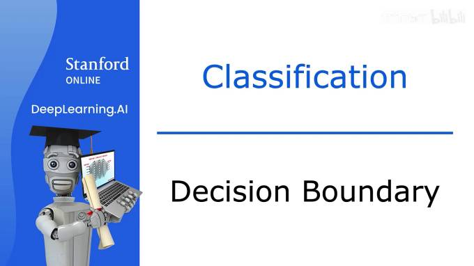
00:06现在，让我们看看决策边界，以更好地理解逻辑回归是如何计算其预测的。
00:14回顾一下，逻辑回归模型的输出分两步计算。
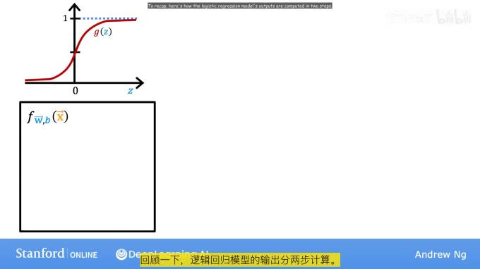
00:21第一步，你计算 z，即 w 点乘 x 加 b。
00:27然后你将 sigmoid 函数 g 应用于这个值 z。
00:32这里再次给出 sigmoid 函数的公式。
00:37另一种写法是，我们可以说 f 等于 g，即 sigmoid 函数，也叫做逻辑函数，应用于 w 点乘 x 加，当然，这就是 z 的值。
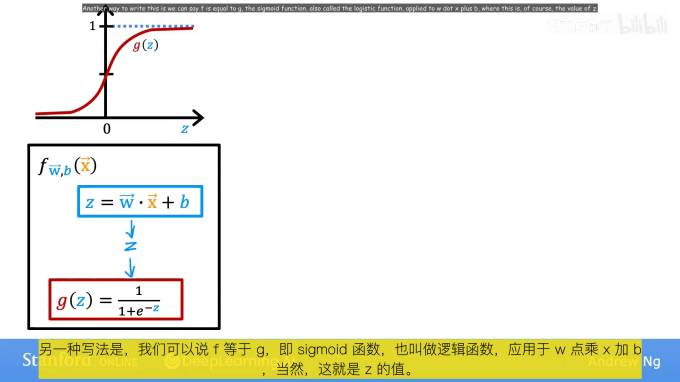
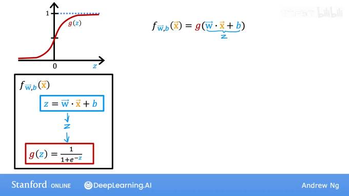
00:54如果你取 sigmoid 函数的定义并代入 z 的定义，你会发现 x 的 f 等于这里的这个公式，一除以一加é 的负 z 次方，你可能还记得我们在上一个视频中说过，我们将其解释为在给定 x 和参数 w 和 b 的条件下，y 等干滋。
01:15你可能还记得我们在上一个视频中说过，我们将其解释为在给定 x 和参数 w 和 b 的条件下，y 等于一的概率。
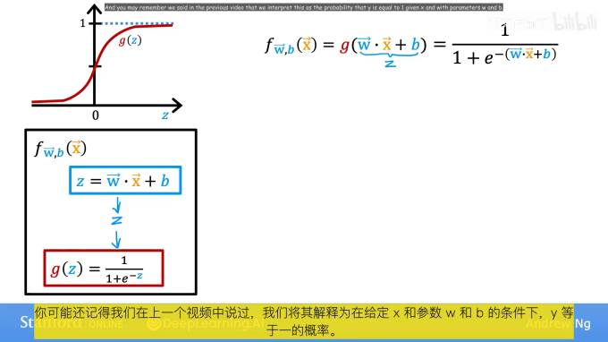
01:24所以这会是一个数字，比如零点七或零点三。
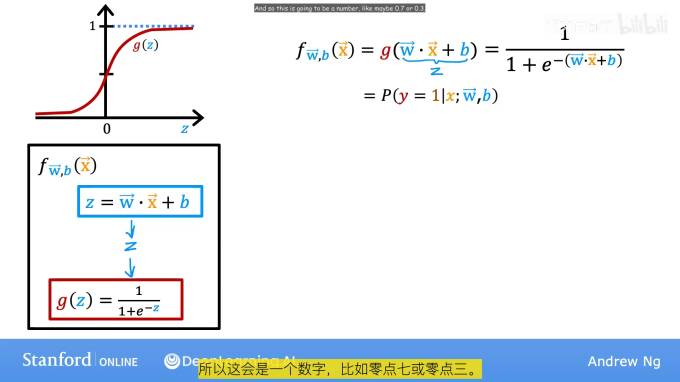
01:30现在，如果你想让学习算法预测，y 的值会是零还是一？
01:38那么，你可以做的一件事是设置一个阈值，高于该阈值则预测 y 为一，或者说你将预测值设为等于一，而低于该阈值时，你会说 yhat，即我的预测，将等于零。
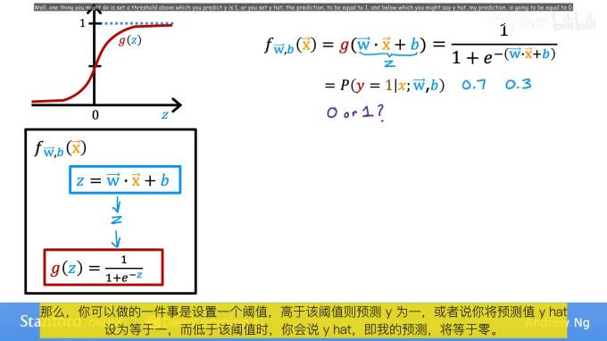
01:55一个常见的选择是选取零点五作为阈值，这样如果 f 大于或等于零点五，则预测 y 为一。
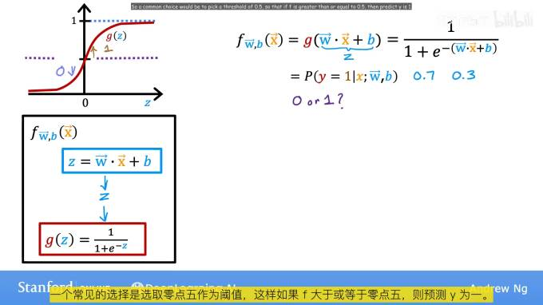
02:06我们将该预测写作 yhat 等于一，或者如果 x 的 f 小于零点五，则预测 y 为零。
02:15或者换句话说，预测 y hat 等于零。
02:20那么现在让我们更深入地探讨模型何时会预测为一。
02:24换句话说，何时 x 的 f 大于或等于零点五？
02:30我们记得 x 的 f 恰好等于 g of z，所以当 g of z 大于或等于零点五时，f 就大于或等于零点五。
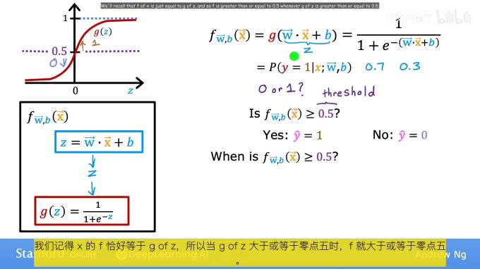
02:43但 g of z 何时大于或等于零点五呢？
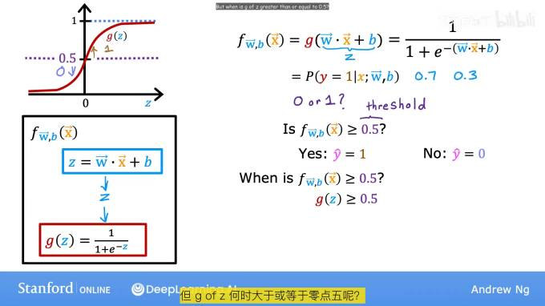
02:48嗯，这是这里的 sigmoid 函数。
02:52所以当 z 大于或等于零时，g of z 就大于或等于零点五，对吗？
03:02也就是说，当 z 落在右半边时。
03:09最后，何时大于或等于零呢？
03:14嗯，z 等于 w 点乘 x 加 b，所以当 w 点乘 x 加 b 大于或等于零时，z 就大于或等于零。
03:27回顾一下，你在这里看到的是，当 w 点乘 x 加 b 大于或等于零时，模型预测为一。
03:40反过来，当 w 点乘 x 加 b 小于零时，算法预测 y 为零。
03:50那么，鉴于此，我们现在来可视化一下模型是如何做预测的。
03:56我将举一个分类问题的例子，其中你有两个特征，x 一和 x 二，而不是只有一个特征。
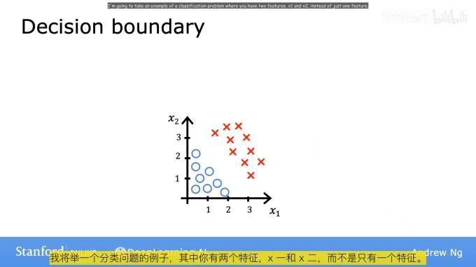
04:05这是一个训练集，红色小叉号表示正例，蓝色小圆圈表示负例。
04:15红色叉号对应等于一，蓝色圆圈对应 y 等于零。
04:25逻辑回归模型将使用这个函数 x 的 f 等于 g of z 来进行预测，其中 z 现在是这里的这个表达式，w 一 x 一加 w 二 x 二加 b，因为我们有两个特征 x 一和 x 二。
04:45并且，对于这个例子，我们假设参数的值是 w 一等于一，w 二等于一，b 等于负三。
04:58现在让我们看看逻辑回归是如何做出预测的。
05:03特别地，让我们弄清楚何时 wx 加 b 大于或等于零，以及何时 wx 加 b 小于零。
05:14为了搞清楚这一点，有一条非常值得关注的线，那就是当 wx 加 b 恰好等于零的时候。
05:23结果，这条线也被称为决策边界，因为在这条线上你对于 y 是零还是一几乎持中立态度。
05:37现在，对于我们上面写下的参数值 w 一、w 二和 b，这个决策边界就是 x 一加 x 二减三。
05:52所以何时 x 一加 x 二减三等于零呢？
05:59嗯，那将对应于直线 x 一加 x 二等于三。
06:11因此，这条线就是决策边界，如果特征 x 在这条线的右侧，逻辑回归将预测为一，而如果在这条线的左侧，逻辑回归将预测为零。
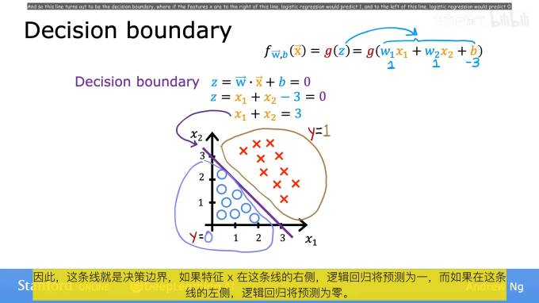
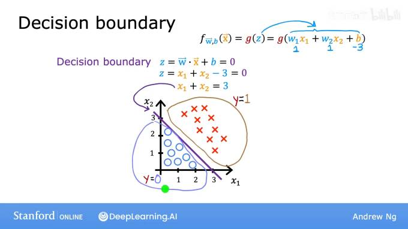
06:29换句话说，我们刚刚可视化的是当参数 w 一、w 二和 b 分别为一、一和负三时，逻辑回归的决策边。
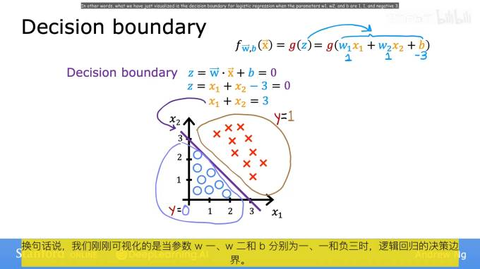
06:42当然，如果你选择了不同的参数，决策边界将会是不同的线。
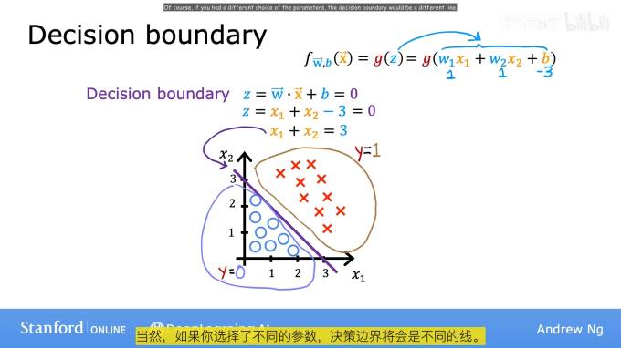
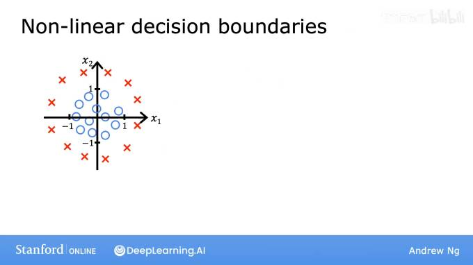
06:49现在，让我们看一个更复杂的例子，其中决策边界不再是一条直线。
06:56和之前一样，叉号表示 y 等于一的类，小圆圈表示 y 等于零的类。
07:07在上周早些时候，你看到了如何在线性回归中使用多项式，你可以在逻辑回归中做同样的事。
07:16那么，让我们设 z 为 W 一 x 一的平方加 w 二 x 二的平方加 b。
07:26用这种特征选择，将多项式特征引入逻辑回归，所以 x 的 f，也就是 g of z，现在是这里的这个表达式的 g。
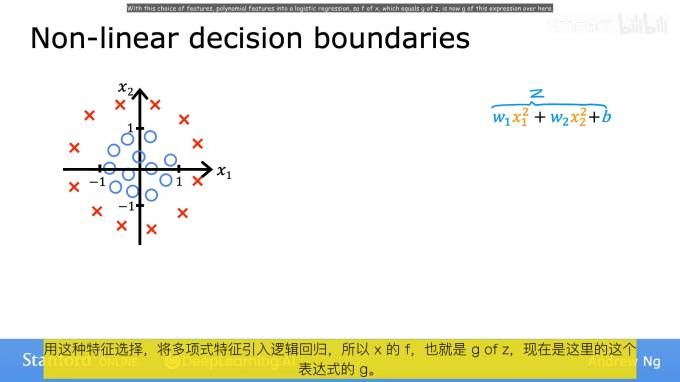
07:40我们假设最终选择 w 一和 w 二为一，b 为负一。
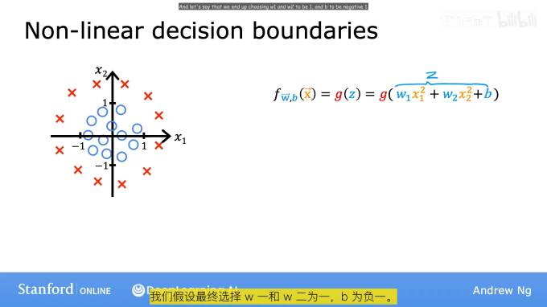
07:49所以等于一乘以 x 一的平方加一乘以 x 二的平方减一。
07:56和之前一样，决策边界将对应于 z 等于零的情况。
08:03因此，当 x 一的平方加 x 二的平方等于一时，这个表达式将等于零。
08:10如果你在左侧的图上画出对应于 x 一的平方加 x 二的平方等于一的曲线，结果就是这个圆。
08:22当 x 一的平方加 x 二的平方大于或等于一时，那是圆外的这个区域，此时你会预测 Y 为一。
08:33相反，当 x 一的平方加 x 二的平方小于一时，那是圆内的这个区域，此时你会预测为零。
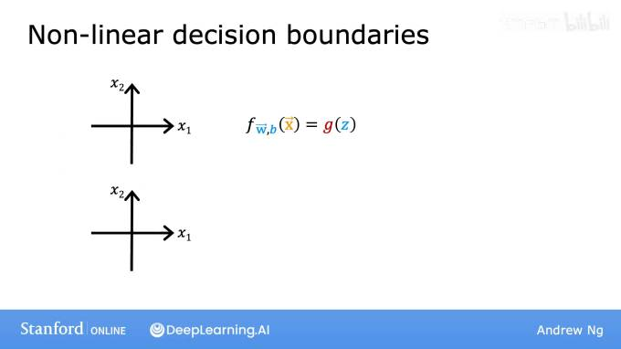
08:46那么，我们能得到比这些更复杂的决策边界吗？
08:53你可以通过使用更高阶的多项式项来做到。比如 z 等于 w 一 x 一加 w 二 x 二加 w 三 x 一的平方加 W 四 x 一 x 二加 w 五 x 二的平方。
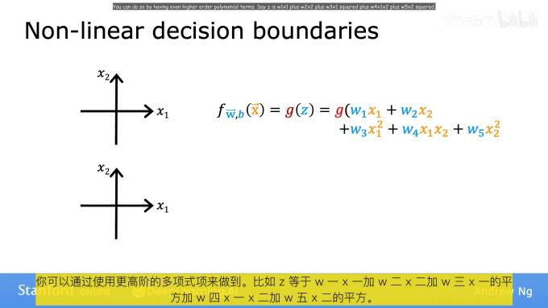
09:09那么你就有可能得到更加复杂的决策边界。
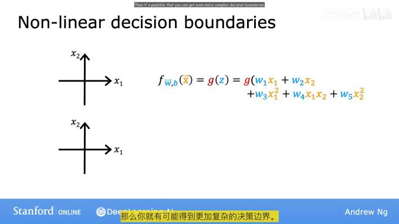
09:16比如这个例子中的边界，一个椭圆，像这样，或者选择不同的参数，你甚至可以得到更复杂的决策边界，看起来可能像这样的函数。
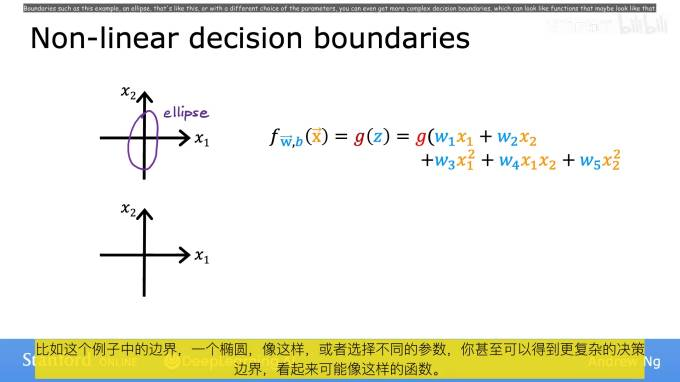
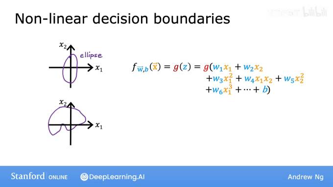
09:32所以，这是一个比我们之前见过的更复杂的决策边界的例子。
09:39这个逻辑回归的实现将在这个形状内部预测 y 等于一，而在形状外部，它会预测 y 等于零。
09:51因此，有了这些多项式特征，你可以得到非常复杂的决策边界。
09:56换句话说，逻辑回归可以学习拟合相当复杂的数据。
10:02然而，如果你不包含任何这些高阶多项式，也就是说你使用的唯一特征是 x 一、x 二、x 三等等，那么逻辑回归的决策边界将永远是线性的，永远是一条直线。下。
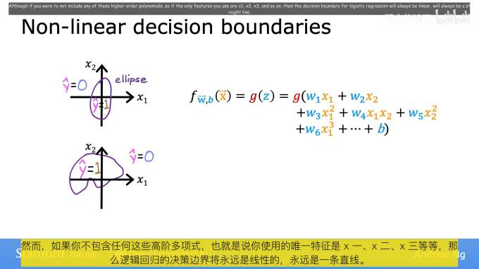
10:15然而，如果你不包含任何这些高阶多项式，也就是说你使用的唯一特征是 x 一、x 二、x 三等等，那么逻辑回归的决策边界将永远是线性的，永远是一条直线。
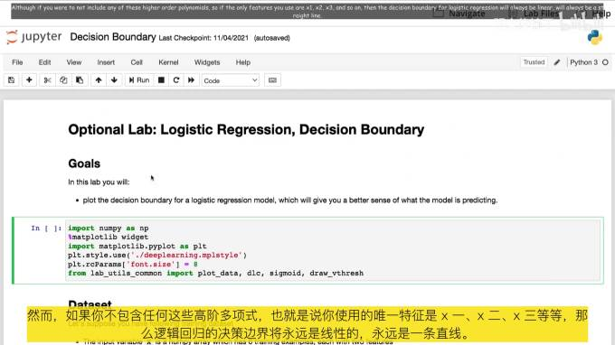
10:17在接下来的选修实验中，你还会看到决策边界的代码实现。
10:25在该实验的示例中，会有两个特征，所以你可以看到决策边界是一条线。
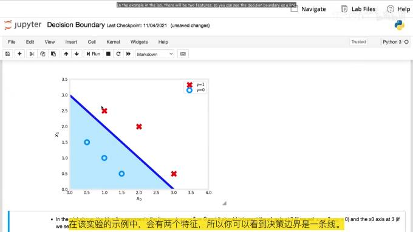
10:32通过这些可视化，我希望你现在对逻辑回归能得到的模型范围有了一个认识。
10:40既然你已经看到了 f 可能计算出的结果，让我们看看如何实际训练一个逻辑回归模型。
10:49我们将首先了解逻辑回归的代价函数，之后，再弄清楚如何将梯度下降应用于它。